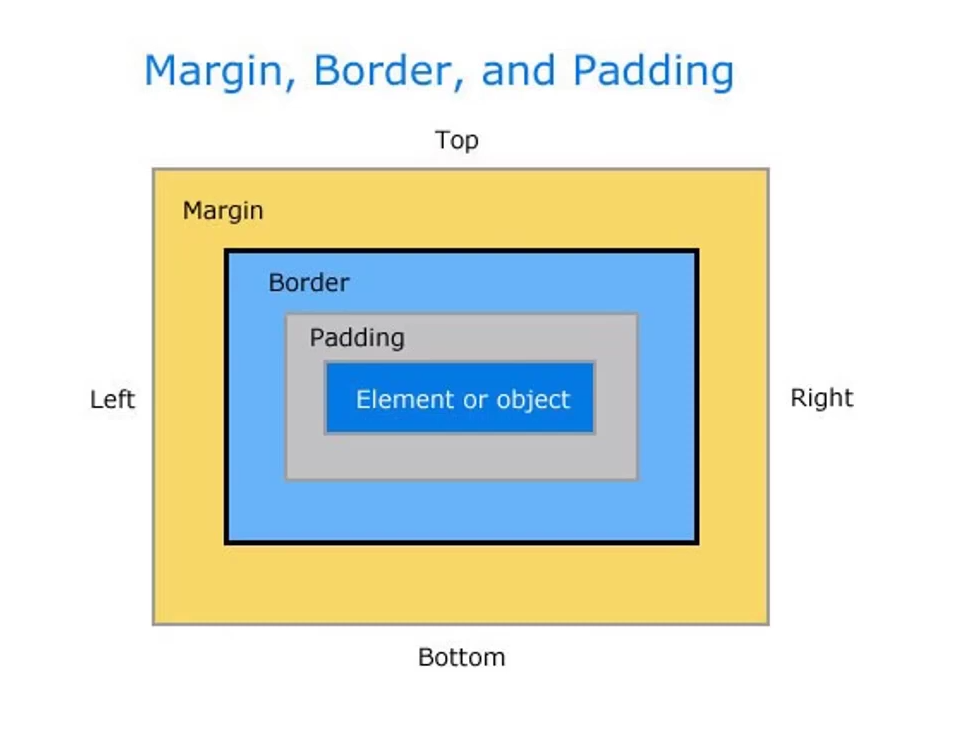

Box 1 => Content Box
Toplam genişlik hesabı :
= Content (400px) + Padding (2 * 10px) + Border (2 * 10px)
= 440px toplam kutu genişliği
Box 1 => Border Box
Content hesabı :
Content = width - padding - border
Content = 500 - (10*2) - (10*2) = 460
Genişlik hesabı :
width = 500 (Sabit)